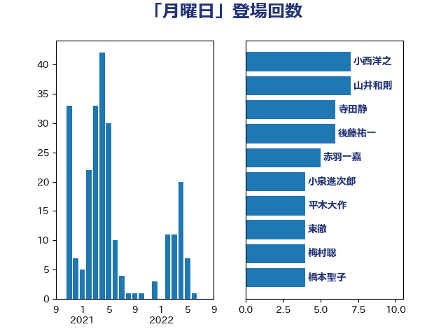

単語「月曜日」

| 小西洋之 | 立憲民主党 | 7 回 |
| 山井和則 | 立憲民主党 | 7 回 |
| 寺田静 | 無所属 | 6 回 |
| 後藤祐一 | 立憲民主党 | 6 回 |
| 赤羽一嘉 | 公明党 | 5 回 |
| 小泉進次郎 | 自由民主党 | 4 回 |
| 平木大作 | 公明党 | 4 回 |
| 東徹 | 日本維新の会 | 4 回 |
| 梅村聡 | 日本維新の会 | 4 回 |
| 橋本聖子 | 無所属 | 4 回 |
| 福田昭夫 | 立憲民主党 | 4 回 |
| 足立康史 | 日本維新の会 | 4 回 |
| 宮本徹 | 日本共産党 | 3 回 |
| 山岸一生 | 立憲民主党 | 3 回 |
| 本村伸子 | 日本共産党 | 3 回 |
| 枝野幸男 | 立憲民主党 | 3 回 |
| 水岡俊一 | 立憲民主党 | 3 回 |
| 河野太郎 | 自由民主党 | 3 回 |
| 田名部匡代 | 立憲民主党 | 3 回 |
| 石川大我 | 立憲民主党 | 3 回 |
| 西村康稔 | 自由民主党 | 3 回 |
| 中島克仁 | 立憲民主党 | 2 回 |
| 串田誠一 | 日本維新の会 | 2 回 |
| 井上哲士 | 日本共産党 | 2 回 |
| 伊藤岳 | 日本共産党 | 2 回 |
| 伊藤渉 | 公明党 | 2 回 |
| 原口一博 | 立憲民主党 | 2 回 |
| 塩川鉄也 | 日本共産党 | 2 回 |
| 小沼巧 | 立憲民主党 | 2 回 |
| 新藤義孝 | 自由民主党 | 2 回 |
| 木原誠二 | 自由民主党 | 2 回 |
| 杉尾秀哉 | 立憲民主党 | 2 回 |
| 松沢成文 | 日本維新の会 | 2 回 |
| 武田良太 | 自由民主党 | 2 回 |
| 河西宏一 | 公明党 | 2 回 |
| 田島麻衣子 | 立憲民主党 | 2 回 |
| 田村憲久 | 自由民主党 | 2 回 |
| 福島みずほ | 社会民主党 | 2 回 |
| 篠原豪 | 立憲民主党 | 2 回 |
| 芳賀道也 | 国民民主党 | 2 回 |
| 茂木敏充 | 自由民主党 | 2 回 |
| 菅義偉 | 自由民主党 | 2 回 |
| 萩生田光一 | 自由民主党 | 2 回 |
| 越智隆雄 | 自由民主党 | 2 回 |
| 上田清司 | 国民民主党 | 1 回 |
| 中西健治 | 自由民主党 | 1 回 |
| 伊藤孝恵 | 国民民主党 | 1 回 |
| 伊藤孝江 | 公明党 | 1 回 |
| 佐藤茂樹 | 公明党 | 1 回 |
| 倉林明子 | 日本共産党 | 1 回 |
| 古川俊治 | 自由民主党 | 1 回 |
| 國重徹 | 公明党 | 1 回 |
| 城井崇 | 立憲民主党 | 1 回 |
| 堀井巌 | 自由民主党 | 1 回 |
| 大岡敏孝 | 自由民主党 | 1 回 |
| 宮内秀樹 | 自由民主党 | 1 回 |
| 宮本岳志 | 日本共産党 | 1 回 |
| 小宮山泰子 | 立憲民主党 | 1 回 |
| 小寺裕雄 | 自由民主党 | 1 回 |
| 小川淳也 | 立憲民主党 | 1 回 |
| 小沢雅仁 | 立憲民主党 | 1 回 |
| 山崎誠 | 立憲民主党 | 1 回 |
| 岩本剛人 | 自由民主党 | 1 回 |
| 岩谷良平 | 日本維新の会 | 1 回 |
| 島村大 | 自由民主党 | 1 回 |
| 平林晃 | 公明党 | 1 回 |
| 末松信介 | 自由民主党 | 1 回 |
| 杉久武 | 公明党 | 1 回 |
| 梅村みずほ | 日本維新の会 | 1 回 |
| 梶山弘志 | 自由民主党 | 1 回 |
| 櫻井周 | 立憲民主党 | 1 回 |
| 浅田均 | 日本維新の会 | 1 回 |
| 猪口邦子 | 自由民主党 | 1 回 |
| 石井準一 | 自由民主党 | 1 回 |
| 篠原孝 | 立憲民主党 | 1 回 |
| 若松謙維 | 公明党 | 1 回 |
| 藤井比早之 | 自由民主党 | 1 回 |
| 藤岡隆雄 | 立憲民主党 | 1 回 |
| 藤巻健太 | 日本維新の会 | 1 回 |
| 逢坂誠二 | 立憲民主党 | 1 回 |
| 道下大樹 | 立憲民主党 | 1 回 |
| 野田佳彦 | 立憲民主党 | 1 回 |
| 鈴木俊一 | 自由民主党 | 1 回 |
| 阿部知子 | 立憲民主党 | 1 回 |
| 青山大人 | 立憲民主党 | 1 回 |
| 青柳陽一郎 | 立憲民主党 | 1 回 |
| 須藤元気 | 無所属 | 1 回 |
| 馬淵澄夫 | 立憲民主党 | 1 回 |
| 高木啓 | 自由民主党 | 1 回 |
| 高木毅 | 自由民主党 | 1 回 |
| 高橋千鶴子 | 日本共産党 | 1 回 |